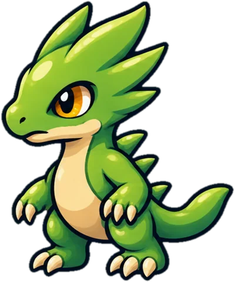

 GrassDragon
GrassDragonTap a stage to read its story.
Verdscale is a small upright green lizard with large round eyes, a wide friendly mouth, and a row of tiny green spines running from its skull to its tail tip. Its scales are bright leaf-green and its belly is a lighter cream. It clings to the cooler rock faces of the Lava Crater's outer edge where mossy tendrils still grow in the cracks, pressing flat to absorb both the warmth from below and what little plant energy the sparse vegetation offers. It communicates by flicking its forked tongue at varying speeds, which the crater's insect population has apparently learned to interpret.
Field note: Verdscale's tongue-flick rate speeds up to over sixty per minute when it is excited - the insects scatter before any visible cause.
Lava Crater. Verdscale and its family are found in the Lava Crater. See everyone who lives there.
Share a Bond Food that matches its types to become friends. Verdscale loves:
A Bond Food is not a trick. It joins your spirit with the Kimuro's spirit, and only when it chooses you.
Print the Kimuro adventure packs: mazes, cards, a board game and Bond Mark medals.
See the printable packs